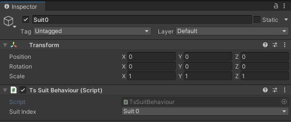
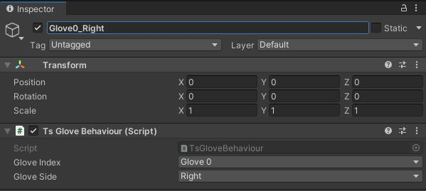

- Generated by
 1.9.4
1.9.4
|
Teslasuit.Unity
Teslasuit Unity Plugin
|
Teslasuit plugin initialization takes place in several stages, including the search and loading of libraries, and the initialization call itself in the API.
TsInitializer class uses RuntimeInitializeOnLoadMethod to load the teslasuit native libraries before the editor or built scene will be loaded. As the teslasuit native libraries directory are not located in Unity project, they are need to be loaded manually from TsInitializer. So, TsInitializer will load Teslasuit native libraries from this point. If the Teslasuit SDK is not installed properly, DllNotFoundException will be thrown with a message "Teslasuit api library not found! Please sure that Teslasuit SDK is installed.".
TsManager component is a root component that is used by Teslasuit components. It can be placed into the scene where the Teslasuit components are used, but it's not required at all (it can be added to the scene in runtime as used by package components or user scripts). TsManager sets DontDestroyOnLoad flag, so the object with this component will be alive between the scenes.
TsDeviceBehaviour is an abstract component containing TsDeviceBehaviour.Device interface that can be used by other components. TsSuitBehaviour and TsGloveBehaviour components are derived from TsDeviceBehaviour and can be added to GameObject. Note that TsDeviceBehaviour.ConnectionStateChanged event is called from thread that is non-rendering thread.
TsSuitBehaviour provides device with a ProductType=TsProductType.Suit only. SuitIndex parameter means that device to be provided is a suit device with choosen index. For example, to access the first suit attached to the system, SuitIndex.Suit0 should be set:

TsGloveBehaviour provides device with a ProductType=TsProductType.Glove only. GloveIndex parameter means that device to be provided is a glove device with choosen index. Glove devices also are separated by TsDeviceSide parameter. It is used to determine, which glove (Left | Right) is provided by this component. For example, to access the first right glove attached to the system, GloveIndex.Glove0 and TsDeviceSide.Right should be set:
